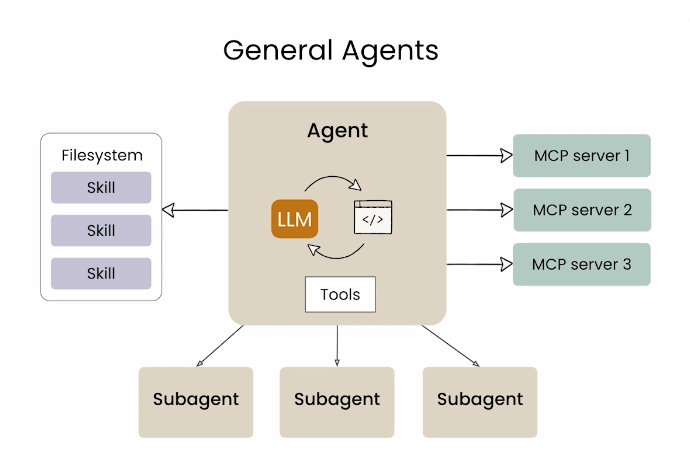

第 8 讲 认识 AI Agent：从聊天到干活
从这一讲开始，AI 不再只是"陪你聊"，而是要替你"动手干"。本讲是整个 Agent 篇（第 8–10 讲）的地基。
一、本讲学习目标
完成本讲后，你应该能够：
- 说出 AI Agent（智能体） 与 Chatbot（聊天机器人） 的本质区别——"说"与"做"；
- 用"数字同事"的类比，说明 Agent 的四要素：模型（大脑）、工具（双手）、记忆（笔记本）、自主规划（拆步骤）；
- 解释 Agent 为什么能操作你电脑里的软件：工具调用的机制与 MCP（模型上下文协议）的作用，并能用"想一想 → 动手 → 看结果"的工作循环（ReAct）描述 Agent 是怎么干活的；
- 完成 Agent 工具的安装登录，牢记并执行安全使用三原则；
- 成功下达第一个本地文件操作任务，并验收 Agent 的执行结果。
二、课前准备
- 无需编程基础：本课程不教写代码，教的是"调度"——把需求说清楚、看懂汇报、验收结果。
- 机房电脑已由教师完成 ZCode（命令行 Agent，接入 GLM 等模型）的安装与登录；自带电脑的同学请提前安装并确认能登录。
- 带上前 8 讲积累的个人提示词库：你马上要用它来指挥一位"新同事"。
- 回顾"数字同事"术语地图（课程知识图谱页），本讲会反复用到。
三、核心概念精讲
1. 从"会说"到"会做"：Agent 与 Chatbot 的区别
前 8 讲里你使用的 AI（智谱清言、DeepSeek 等）本质上是聊天助手：它像坐在你旁边的顾问，擅长解释、分析、提建议、写草稿——但它从不真正碰你的电脑。你请它"整理实验数据"，它只能给你一段"整理建议"。
Agent 则像一位能接任务的数字同事：你给它一个目标，它会自己思考步骤、调用工具、动手执行、检查结果，最后交付一个实实在在的成果——一个文件夹、一份文件、一张图表。一句话概括两者的区别：
Chatbot 负责"说"（陪你问答），Agent 负责"做"（接任务、跑流程、交付成果）。
再往深一层：Chatbot 的目标是给你一个答案，Agent 的目标是把事情继续做下去——直到任务真的完成，而不是"回答完就下班"。
2. Agent 四要素：一位数字同事的"岗位配置"
沿用入门材料的类比，一个能干活的 Agent 由四部分组成，缺一不可：
| 要素 | 类比 | 作用 | 本课程中的例子 |
|---|---|---|---|
| 模型（LLM） | 大脑 | 理解需求、分析判断、决定下一步做什么 | GLM 等大模型负责"想" |
| 工具 | 双手 | 真正执行动作：读写文件、运行命令、操作软件、上网查资料 | ZCode 操作你电脑里的文件夹 |
| 记忆 | 长期笔记本 | 跨任务保存你的偏好与约定（如"报告统一用宋体"）；而上下文窗口只是"当前桌面"，容量有限 | Agent 记住你的项目放在哪个目录 |
| 自主规划 | 拆步骤的能力 | 把"帮我准备实验报告"这类模糊目标，拆成一串可执行的步骤并逐个完成 | 先看数据 → 再算结果 → 再生成图表 |
这也解释了为什么光有强大的大模型还不够：大脑再强，没有"双手"就只是顾问，没有"工作方法"就干不稳活。有一个很好的概括——Agent 的基本脚手架是命令行执行与文件读写这两件基础工具；而要稳定可靠，还需要上下文（知道任务背景）和领域专业知识（知道这类活该怎么干）。
还可以把四要素压缩成一个更简洁的公式：
Agent = LLM + Context（上下文）+ Tools（工具）——LLM 负责判断，Context 是它此刻知道的东西，Tools 是它真正能使用的能力。模型还是那个模型，真正变化的是：你开始给它眼睛、手，以及一张可以工作的桌子。
3. Agent 为什么能"动"你的电脑？
先用一个最小的例子看清"多了一步"意味着什么。你在普通对话助手里问："明天上海天气怎么样？"如果它不能联网，它能告诉你上海在哪、八月一般很热，甚至一本正经地提醒你带伞——但它唯独不知道明天到底下不下雨，因为它没有明天的天气数据。现在给模型一个能力：get_weather(城市, 日期)，再问一次，事情就变了：
- 模型判断：这个问题需要实时数据 → 调用工具
get_weather("上海", "明天")； - 外部世界返回结果：小雨，27–33℃，降水概率 80%；
- 模型拿到结果，组织回答："明天上海大概率有雨，出门记得带伞。"
以前的链条是"你 → 模型 → 回答"；现在变成了"你 → 模型判断该干什么 → 调用工具 → 外部世界返回结果 → 模型继续判断 → 回答"。就多了这么一步，但模型第一次不只是"说"，它开始"做"——这大概就是理解 Agent 最好的入口。
很多同学的第一反应是警惕："AI 能删我的文件？"——这里有一个关键机制要澄清：
大模型本身没有"手"。它做的是输出一个"动作请求"（例如"请求新建文件夹 D:\物理学习\力学"），真正的执行者是运行 Agent 的程序（如 ZCode）在操作系统层面完成，然后再把执行结果"汇报"回给模型。这条"模型决策 → 程序执行 → 结果回传"的循环，就叫工具调用——AI 像在"按按钮"，但按钮板是程序提供的，而且可以被权限管住。
那 Agent 怎么连接五花八门的外部软件呢？不同软件的接口各不相同，就像不同品牌的电器各有各的插头。于是业界制定了一套统一标准——MCP（Model Context Protocol，模型上下文协议）。
没有统一标准时，每接一个软件就要配一个专用转换头；有了 MCP 这个"通用插座"，软件方按标准提供接口，Agent 即插即用地获取外部工具和数据——查文献数据库、读云盘文件、连日历。一句话概括：MCP 负责把智能体连接到外部系统与数据。顺带一提：MCP 和"技能"分工不同——MCP 管"连接"，技能（Skill）管"方法"，详见本讲拓展区。
技能（Skill）则是预先打包好的"工作方法包"：菜谱（方法）教 Agent 怎么做一道菜，菜刀和炒锅（工具）负责真正切炒。第 5 讲你写的"结构化提示词卡"就是技能的雏形——把一次性的提示词沉淀为可复用的方法。后续两讲（第 10、11 讲）你会看到 Agent 借助技能稳定地操作 Office 与处理实验数据。
4. 真正关键的，不是工具，而是"下一步由谁决定"
会调用工具，还不足以叫 Agent。有一个例子点破了分界线——假设你有一个数据处理脚本跑不起来，把它丢给 AI："帮我把它修好。"有两种做法：
做法一：写死的固定流程（Workflow）。"读配置 → 装依赖 → 跑测试 → 把报错发给模型 → 让模型改文件 → 再跑测试"。每一步做什么、什么顺序，都是人提前安排好的。它当然也用了大模型、也用了工具，但模型更像流水线上的一台机器——流程是人写死的。
做法二：只给目标，让它自己定步骤。只告诉它"这个脚本跑不起来，修好它"。它先看一眼目录里有什么，读说明文件，查 Python 版本——发现版本不对；但它没有立刻"宣布破案"，而是继续跑测试，又发现三个报错；于是去读依赖清单，装上缺的包，再跑；还有测试没过，就继续看代码、改、再跑……直到全部通过。注意关键的一处：没有任何人事先告诉它"第几步必须读依赖清单"——是它看到报错以后，自己判断下一步该读什么。
后一种做法的整个过程，就是一个循环：
ReAct（Reason + Act，推理-行动循环）：思考 → 行动 → 观察结果 → 再思考 → 再行动……模型想一下，去做一步，看到结果，再想下一步。支持这个循环运转的、模型外面那层负责状态、工具、记忆和反馈的程序，行话叫 Harness（执行环境）——你不需要记住这个词，第 16 讲（课程总结）它会再出场。
这个循环简单到可以用几行"伪代码"写出来（代码观光——不用会写，看懂它在说什么就行）：
while 任务没完成:
看看现在发生了什么 # 观察
下一步 = LLM(目标, 当前信息, 可用工具) # 想一想
执行结果 = 执行(下一步) # 动手
把执行结果放回上下文 # 喂回去，进入下一轮先不用管 LangGraph、MCP、多智能体这些名词——最小的 Agent，核心就这么一个循环。第 8–10 讲你指挥 ZCode 干的每一次活，背后转的都是它。
这个循环还带来一个重要的观念转变，直接关系到本课程反复强调的"验收"：评价一个 Chatbot，看它回答得好不好；而评价一个 Agent，要看事情到底有没有被做完。文章里有个扎心的例子：让 AI 整理"本周值得关注的 AI 开源项目"，普通聊天助手看到任务立刻动笔，标题、介绍、结尾金句一应俱全，看着挺完整——可它根本没去看这周的项目列表。"文字像答案，不代表任务真的完成了。"所以从本讲起，你的每个任务单都写明完成标准：不是"AI 回答得像不像回事"，而是"成果在不在、对不对、能不能用"。
5. Agent 的常见形态
Agent 不是某一家公司的专利产品，按"住在哪里"大致分四类，本课程都会见到：
| 形态 | 代表 | 特点 |
|---|---|---|
| 命令行 Agent | ZCode（本课程主力） | 直接操作本地文件与终端，能力最完整，本讲起使用 |
| IDE 类 Agent | Cursor 等 | 住在代码编辑器里，擅长编程场景（第 14 讲接触） |
| 桌面 / 手机 GUI Agent | 各类 GUI 助手 | 像人一样"看屏幕、点鼠标"，操作图形界面软件 |
| 云端 Agent | 扣子空间等 | 任务在云端执行，不依赖本地环境，适合轻量任务 |
四、物理场景案例演示
课堂开场，教师会现场演示"一句话布置任务"。下面是演示用的完整提示词，请注意它和前 8 讲的提示词有个重要区别：它描述的是"要达成的结果"，而不是"要回答的内容"。
在 D:\物理学习 目录下，为本学期创建课程文件夹树：
力学、电磁学、热学、光学、物理实验，共 5 门课；
每门课下面再建 3 个子文件夹：讲义、作业、数据。
说明：目录名含中文属正常情况，直接创建即可；已存在的目录不要重建，汇报即可。
最后生成一个 README.txt，说明整个目录的用途，
并列出你创建的所有文件夹路径（用相对路径），供我逐条验收。🧪 查看运行结果（ZCode 实测）
AI Agent 真实执行并生成上述结果（执行环境：GLM+ZCode）。
【Agent 的执行汇报】共创建 16 个文件夹 + 1 个 README.txt：
物理学习/力学/讲义 物理学习/力学/作业 物理学习/力学/数据
物理学习/电磁学/讲义 物理学习/电磁学/作业 物理学习/电磁学/数据
物理学习/热学/讲义 物理学习/热学/作业 物理学习/热学/数据
物理学习/光学/讲义 物理学习/光学/作业 物理学习/光学/数据
物理学习/物理实验/讲义 物理学习/物理实验/作业 物理学习/物理实验/数据
物理学习/README.txt（说明整个目录的用途，全文见下）
【目录树】tree /F 命令实际输出：
卷 新加卷 的文件夹 PATH 列表
卷序列号为 000000D8 525D:3079
D:\DESKTOP\人工智能应用基础\DEMO_RUNS\CH09\物理学习
│ README.txt
│
├─光学
│ ├─作业
│ ├─数据
│ └─讲义
├─力学
│ ├─作业
│ ├─数据
│ └─讲义
├─热学
│ ├─作业
│ ├─数据
│ └─讲义
├─物理实验
│ ├─作业
│ ├─数据
│ └─讲义
└─电磁学
├─作业
├─数据
└─讲义
【README.txt 全文】
《物理学习》课程资料目录说明
================================
本目录用于集中存放本学期 5 门物理课程的全部学习资料，
按“课程 → 资料类型”两级结构组织，共 5 门课、15 个子文件夹。
一、目录结构
物理学习/
├── 力学、电磁学、热学、光学、物理实验（5 门课程文件夹）
└── 每门课下设 3 个子文件夹：
├─ 讲义：课堂讲义、课件、板书照片
├─ 作业：课后作业题目与本人作答
└─ 数据：作业与实验产生的数据文件、图表
二、使用约定
1. 每门课的资料只放入对应课程文件夹，不跨课程混放；
2. 文件命名建议“日期_主题”，例如 20260915_单摆周期测量.csv；
3. “数据”文件夹存放原始记录，只增不改；确需修改先备份副本；
4. 目录结构如有调整，请同步更新本 README。
（本 README 由 AI Agent 依课程第 8 讲演示任务生成，供验收核对。）
提示：验收方式——亲自打开资源管理器逐层核对，并检查 Agent 汇报的路径与实际一致。
拆解这条指令为什么"专业"——其实就是第 4 讲的四要素在 Agent 场景的应用：
- 具体明确：给出了根路径（D:\物理学习）、文件夹名单（5 门课）、结构要求（3 个子文件夹）——没有"随便建一些文件夹"这种模糊表述；
- 给足上下文：说明了这是"本学期课程"的目录树，Agent 能判断命名规范；
- 规定输出：要求生成 README 并列出所有创建的路径——这一句是"验收抓手"，让 Agent 自己汇报干了什么。实测版还加了两处：路径汇报改用相对路径（换一台机器也能逐条核对），并注明已存在的目录不重建（任务重复执行不出乱子）。
看完演示，请思考：如果只说"帮我建个学习文件夹"，效果会差在哪里？（答案藏在本讲自测第 5 题。）
五、课堂实操任务单
- 最小授权：只让 Agent 访问它完成任务所需的目录——本讲所有操作都在教师指定的练习目录内进行；
- 危险操作需确认：删除、覆盖、批量修改等动作，必须由你逐次确认后才执行；
- 重要文件先备份：动任何重要文件之前，先复制一份副本。
在教师指定的练习目录内，指挥 Agent 依次完成三件事。每完成一项，在方框中打勾（勾选状态会自动保存）：
🧪 查看任务①②③的 Agent 执行实录
AI Agent 在练习目录中真实完成了任务①②③（执行环境：GLM+ZCode）。人物信息为虚构示例。
任务① 新建三个子文件夹 指令：在练习目录内创建“课程笔记”“实验数据”“AI 作品”三个文件夹。 实际执行：创建目录命令（mkdir）+ 查看结果（ls），输出为—— AI 作品 实验数据 课程笔记 实测提示：“AI 作品”中间含空格，命令行里必须用引号包住，否则会被当成两个名字； 在对话里下指令则不必操心，把名字原样说给 Agent 即可，它会自己处理引号。 任务② 生成自我介绍.txt 指令：在练习目录内生成“自我介绍.txt”，内容包含姓名、专业、本学期使用 AI 的一个小目标。 实际生成的文件，全文如下—— 自我介绍（课程示例，人物信息为虚构） ==================================== 姓名：李衡（示例） 专业：物理学专业 本科二年级 简介：喜欢动手做实验，也喜欢把测量得到的数据整理得干干净净。 上学期《力学》课程的单摆实验让我第一次体会到：数据整理比测量本身还费时间。 本学期使用 AI 的一个小目标： 学会指挥 AI Agent 替我完成数据整理类杂活——先备份、再整理、最后逐条核对， 把省下来的时间用在思考物理问题本身。 任务③ 读取自我介绍.txt 并总结 指令：读取“自我介绍.txt”并总结内容。 实际执行：Agent 用读文件命令（cat）取出全文（与任务②所示一致），随后给出总结—— 总结：这是一份物理学专业本科二年级学生（示例人物“李衡”）的自我介绍。 他喜欢动手做实验、把测量数据整理得干净整齐，曾因《力学》单摆实验感到数据整理很费时间； 本学期 AI 使用小目标：让 Agent 代办数据整理类杂活，坚持“先备份、再整理、最后逐条核对”， 把省下的时间用于思考物理问题本身。 验收核对：要点齐全，但它漏了两处细节——“上学期……第一次体会到”的经历表述被压缩成一句感受， 首行“人物信息为虚构”的声明也未复述。逐条核对，正是任务③要训练的习惯。
讨论（第 2 节结尾）：哪些事你敢交给 Agent？哪些不敢？为什么？——"敢与不敢"的边界，就是权限意识的起点。
既然 Agent 会自己决定下一步，是不是让它越自由越好？恰恰相反。一个实用的三分法是——确定的事情交给程序，需要判断的事情交给模型，危险的事情交给人确认。假如一个流程每一步都确定得不能再确定（比如"读这 100 个文件 → 统一改后缀 → 生成清单"），就该写成固定程序或固定流程，没必要让 Agent 每步都"想半天"；Agent 最值钱的地方，要留给那些你提前写不死的环节——修脚本时下一步读哪个文件、分析数据时发现异常后往哪个方向挖。还有一句同样重要：有些任务根本不需要 Agent——让 AI 写一段数据说明，普通对话助手完全够用，上 Agent 反而是杀鸡用牛刀；但"把整个下载文件夹按规则整理好并生成清单"这种多步骤、要动手的活，才是它的主场。
六、常见坑与翻车案例
- 坑① 不说清位置："帮我建个文件夹"——Agent 在它当前所在目录建完了事，你找了半天没找到。解法：给根路径，或开工前先明确工作目录。
- 坑② "随便整理一下"：没有规则的整理无法验收——Agent 按它的理解分好类，往往不是你的习惯。解法：先定规则，再执行；规则本身就是验收标准。
- 坑③ 一上来就给最大权限：让 Agent 访问整个磁盘图省事，一旦指令有歧义，误伤范围也被放大。解法：最小授权，练习期只在练习目录内操作。
- 坑④ 不看汇报就关窗：Agent 说"已完成"不等于"完成得对"，执行汇报必须逐条核对。解法：要求 Agent 列出"改动了什么、在哪里"，你亲自打开看。
- 坑⑤ 报错就不敢继续：看到一屏报错就慌了。其实报错是给 Agent 看的病历——把报错原文完整贴回，让它自己修（第 9 讲将系统训练这个习惯）。
七、自测
1. Agent 与 Chatbot 的本质区别是？
- Agent 使用的模型更大
- Agent 能调用工具、自主执行任务并交付成果
- Agent 的回答速度更快
- Agent 不消耗 Token
查看答案
B。区别不在模型大小，而在"说"与"做"——Chatbot 陪你问答，Agent 接任务、跑流程、交成果。
2. 在"数字同事"类比中，让 Agent 真正能"动手干活"的是四要素中的哪一项？
- 模型（大脑）
- 工具（双手）
- 记忆（笔记本）
- 自主规划（拆步骤）
查看答案
B。模型负责"想"，工具负责"做"。没有工具的 Agent 只是顾问。
3. MCP（模型上下文协议）的作用，最接近下面哪个类比？
- 一门用来开发 AI 的编程语言
- 一个容量更大的大模型
- 让 Agent 即插即用连接外部软件与数据的"通用插座"
- 一种压缩文件的格式
查看答案
C。MCP 是统一连接标准：软件方按标准提供接口，Agent 无需为每个软件单独适配。
4. 判断题："大模型自己伸出手，删除了我硬盘上的文件。"这个说法科学吗？
查看答案与解析
不科学。模型没有"手"：它只输出"动作请求"，真正的删除动作由运行 Agent 的程序执行。这正是权限设置有意义的原因——管住程序，就管住了 AI 的行动边界。
5. 简答：为什么本讲所有操作都要求先在"练习目录"内进行？请用安全三原则说明。
参考答案
①最小授权——把 Agent 的可活动范围限制在练习目录，即使指令有歧义也不会波及重要文件；②危险操作需确认——练习环境下可以放心观察 Agent 的每一步，养成逐次确认的习惯；③重要文件先备份——练习目录里没有重要文件，天然满足备份要求，但习惯要从第一课养成。
两道题检验"循环"这一节，先自己作答，再展开答案。
V1. 同样是"用 AI 修一个跑不起来的脚本"，下面哪种做法才算 Agent？
- 人提前写好固定流程：装依赖 → 跑测试 → 发报错 → 改文件，逐步执行
- 只告诉它"修好它"，它自己看情况决定下一步读什么、跑什么、改什么
查看答案
B。分界线不在"用没用大模型、用没用工具"，而在"下一步由谁决定"：流程写死了，模型只是流水线上的一台机器；由模型看结果自主决定下一步（想一想 → 动手 → 看结果），才是 Agent。
V2. 让 AI"整理本周值得关注的 5 个 AI 开源项目，写成周报"，它立刻交出一篇结构完整的稿子。评价它干得怎么样的正确标准是？
- 文字通顺、有标题有结尾金句，就算完成
- 先查它是否真的检索了本周的项目列表、筛选过程是否可查、5 个项目是否真实成立
查看答案
B。"文字像答案，不代表任务真的完成了。"评价 Chatbot 看回答好不好，评价 Agent 要看事情有没有被做完——这正是本课程每个任务都写"完成标准"的原因。
八、课后作业
让 Agent 完成 3 个文件管理任务，并把过程完整记录下来：
- 为你的下载文件夹制定整理规则，并让 Agent 按规则执行（先备份再动手）；
- 批量重命名一组练习文件（如把 10 个 txt 统一改成"编号_原名"格式）；
- 为一个文件夹生成 README 说明文档。
记录内容：每条指令原文、Agent 的执行汇报、你验收的结果（对了什么、错了什么、你怎么干预的）。
按课程《学术诚信与 AI 使用规范》，本作业需附《AI 使用声明》：用了什么工具、让它做了什么、你如何核查。"AI 产出，人工把关。"
九、进阶拓展（选学）
🎓 Skills、Tools、MCP、Subagents 到底怎么分工？（为第 9–10 讲打底）
一张对比表讲清了 Agent 生态中的四个角色。你可以先记住前两行，后两行在第 10、11 讲用到时再回头看：
| 组件 | 它是什么 | 一个类比 |
|---|---|---|
| 工具（Tools） | 底层执行能力：读写文件、执行命令、搜索网页 | 锤子、锯子、钉子 |
| 技能（Skills） | 打包好的工作方法与专业知识，让 Agent 稳定可复用地干活 | "怎么打造一个书架"的图纸 |
| MCP | 连接外部系统与数据的统一协议 | 通用插座 |
| 子代理（Subagents） | 由主管 Agent 分派的专项助手：独立上下文、有限权限，干完汇报 | 主管手下的专项实习生 |

还有一个值得提前知道的机制——渐进式披露：工具的定义会一直占用上下文窗口，而技能只在需要时才被加载。就像同事不必把公司所有规章都摊在桌面上，接到哪类活再翻哪本手册——省下的正是最贵的"桌面空间"（上下文容量）。
想深挖的同学，可阅读 agentskillsdev.com 的中文深度手册（含 Claude Code 架构解析；课程以 Claude 为例讲解原理，课堂使用 ZCode 演示），作为课堂内容的延伸。